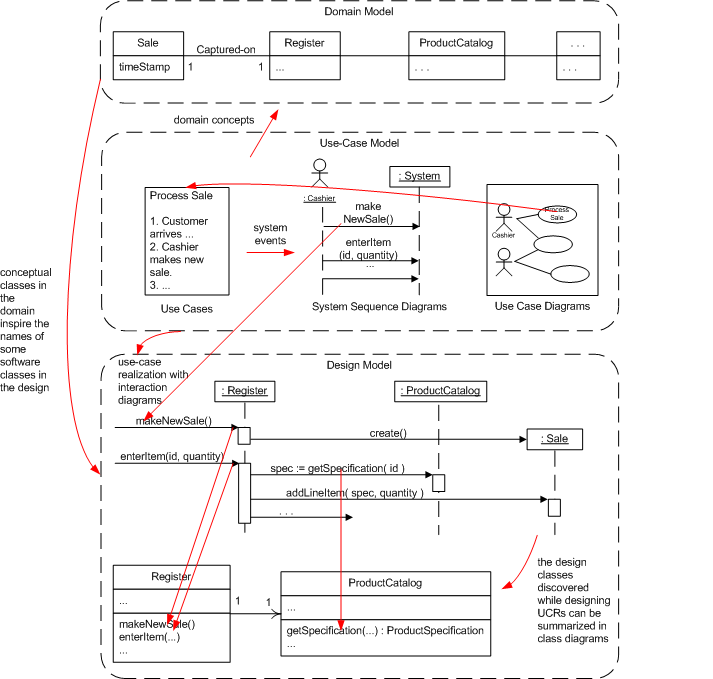

Would you please be so kind and explain the hierarchy or sequence in the
development of UP, UC, Domains, SSD, Diagrams, GRASP, etc.. The author
mentions all these methods, but it is not only overwhelming but confusing
at times.
UP is a process with phases that describe the mixtures of activities
as you develop the software.
UC? Use Case: a description of something a user wants and the steps
they can take to get it. They palce the requirements for a system
in context and are a scource of scenarios that will be realized later.
Domain Models describe the ideas in the clients minds and world. These
should be started in the early phases of the UP. They are a source of
ideas for designing classes.
An SSD shows a scenario with formalized messages as the first step
in realizing a use case scenario.
There are 13 types of UML diagram. And you can use any of them....
but we focus on: use case, interaction, and class diagrams.
GRASP is a set of 9 guidelines for designing maintainable OO software.
[ 16answer.html ]

[ 13.html ]
So, from the SSD we extract the system operations. For each system
operation, we can use GRASP to determine which objects have what
responsibilities related to the system operation, how they work together to
complete the operation, and what information they need to know for the
operation to function properly. Based on what we discover through GRASP,
we construct interaction diagrams. Does that sound right?
Yep!
Actually -- there is some feedback and iteration between GRASPing and the diagrams.
All this object designing is great for creating a new system, but what if
you're planning on using/implementing parts of another, already built
system or framework? Would you still show objects and diagrams that are
already built into the system/framework you plan on using? You wouldn't
use these systems/frameworks as objects themselves, would you?
Good question! Here are some thoughts
- You are using an external system that you can not change.
It should appear as an actor in use cases. You will have to
understand how to use it. You can use the same diagrams
(interaction, class, protocol state machine) to analyse
how it behaves. You can then include these in your
designs.
- Often we design classes that act to make a given subsystem
work the way we want it too. These patterns will be covered later:
[ patterns.html#Facade ]
,
[ patterns.html#Adaptor ]
,
[ patterns.html#PV ]
, ... A simple example in today's reading is the way Larman
hides a random number generator inside the Die class.
- If we are talking about frameworks like MSFC or Java Swing then
you'll find diagrams a powerful aid for understanding
how they work and how you use them.
- You'll may need to think about how you plan to use an existing
subsystem/framework/class -- it appears as a balck box but
you may need to use interaction diagrams to think out what you
want to do with it.
- If you have an object-oriented framework you will have to extend
existing classes (in C++ derive new classes from old ones).
You will also have to implement interfaces. Diagrams help.
- With luck the given system/framework will have diagrams already.
- You may have a tool that will reverse engineer existing
sytems into design diagrams.
- If you have classes that exist they may have to be changed. Diagrams
can help.
- K.I.S.S. I don't mean you draw everything! I mean you draw things
when you have to understand them. Neither do I mean that you have
to draw everything before you code... Code+test is a powerful way
to check your understanding and documenting what you have learned.
YES.
When it is obvious what it should or if there is a serious risk
that would be resolved by implementing a start up case.
Notice the problem: doing the other use cases exposes the information
that you need (but don't know you'll need) for the start up case.
On page 347 Craig's view of creating initialization sounds 'waterfallish'.
Why should we hesitate to start with initialization, we are 'iterating'
(w/errors expected), are we not?
His observation is that we don't what we are initializing until
we have finished designing the classes and interactions.
I interpret this to mean that in each iteration,
just before you code the new stuff, you work on designing the intialization.
However: unit testing can start earlier. But this probably only
needs 'mock objects' to be initialized.
The book advises us to create the initialization design at last, why is this important? aren't these the earliest ones to execute? if so then why is it good practice to design them at last?
Unlike most use cases
the "Start up" use case is not determined by what the user (probably called
"Admin" by the way) needs when starting the system but by the current design.
So, you don't need any scenarios or SSDs.
You need to know what objects to create -- and this comes from design.
Don't forget that design is a process of discovering what needs to be inside
the software. Until you you know this, you can not set it up.
Other examples of these kinds of use case are
Make a back up
,
Recover after disaster
, and
Shut down
, I guess.
Exception -- designing the instalation process for an application.
THis will need a proper set of scenarios etc. No
time to discuss this in this course.
Seems to me that the book puts a good portion of stress in Object Design, how important of a process is it in real life applications?
No design means software that is at best more expensive to maintain.
Even the most code-centric processes tend to see a design as something that
the code helps you discover via testing and refactoring. Larman just stresses
and demonstrates a way of getting there quickly and reliably.
Can you explain exactly what the controllers are? Are they the interactions between classes and the UI?
A controler is any class in your design that gets messages from the
User Interface and handles them. Typically it does this by sending messages
to other objects rather than doing things internally.
Should Case realizations be based on conceptual classes or on actual software classes? Or, are these classes interchangeable in the Domain Model?
Do not omit the word "use" from "Use case"!
Should Use Case realizations be based on conceptual classes or on actual software classes? Or, are these classes interchangeable in the Domain Model?
(1) look in the current (growing) design model for suitable classes. (2)
look in the domain model to see if you can use one of those concepts to
inspire a design class.
Can you explain the Dynamic view and Static view of enterItem design in page 334? what is the difference between this two view? which one is more popular?
Ball game analogy: The design class diagram is rather like a rule book -- it shows all the moves that you
can make and how they might be related. Each dynamic view describes, in detail a particular
play: who has the ball, where you pass it to, where people run....
Transit analogy: The design class diagram is a map showing all possible routes and transit points
and a dynamic view shows a particular trip you can take.
Every body, if there is more than one or two classes, needs and uses a design class diagram --
static view.
You need dynamic views of particular transactions, parts of the design that are not obvious.
The section on connecting the UI layer to the Domain layer confused me. Can you explain this more?
The connection is made by sending messages (calling member functions) that
you find in Larman's SSDs.
See more below.
How do you connect the UI Layer to the Domain Layer?
The UI layer is made of objects concerned with the look-and-feel of the
application. They tend to be designed to fit a particular framework and language.
You have to
set up objects -- using the GUI framework you are using, that send
SSD messages to controllers and/or domain objects.
The details depend on the UI framework you are using. A typical technique is
to define a class of object that fits an interface given by
the framework and pass an object of this class to the UI Framework as an
"observer" or "subscriber". Modern Java applications do this
with the "ActionListener" interface, for example.
We will return to this later in the book.
Note: in very simple systems I've seen the domain code placed inside
the framework's UI classes. I think this leads to a unmaintainable mess.
Recently I took one of my messes -- a large UNIX script and hooked it up
with a PHP+HTML user interface. The connection was by calling (1)
creating temporary files and (2) calling the scripts. Simple, no objects,
and ........ it broke the first time the server was reconstituted. GACK!
It is confusing unless you've worked with a modern GUI framework... I've dug up
the following old page
[ ../cs320/java/test.GUIApplet.html ]
as an example of a papge with a GUI applet. All it does is report the incoming
events from the primitive Java GUI Framework it uses. You can look at the code
[ ../cs320/java/GUIApplet.java ]
if you wish -- but do not copy it. It is full of deprecated classes and messages
that are likely not to compile in the future. What I need is time to bring myself
and my code into the 21st century by implementing an ActionListener Interface.
Look in (or draw) a SSD. Each message is input into your system of objects.
During which iteration should the UI Layer be connected to the Domain Layer?
The first time you have an end-to-end test of a scenario you will need to have
a imulated user do something.... and that only works if the UI is connected to
the Domain layer.
Seeing the connection is critical this should be done at the start of Elaboration.
A partial user interface, connected to a very incomplete design with domain and
support classes involved.... just to see if your ideas will work.
Exactly what is the Command-Query Separation Principle?
No operation should change an object and also return a value.
See bottom of page 358.
In C++ this means that if you have a function in a class then it is
either a constructor (returns no value), a void function (returns no value),
or a "const" function (doesn't change the object -- is a query).
Still after reading the Command-Query Seperation Principle, I'm not getting the big picture. Is this a important concept and if so could you explain it?
It should have been beaten into you in CSCI201 and 202:-)
Can you give some examples of how Command-Query Separation Principle methods are used?
If you look at the way that the C++ STL stack works
[ ../samples/stl.html#Stacks ]
the operations of pushing and popping do not return any values, and the operation
top and empty don't change the stack. Here
[ ../samples/stl.html#Example of an STL Stack ]
is an example of how they are used.
Similarly with the
[ ../samples/stl.html#Queues ]
in the C++ Standard Library keeps commands and queries separate. The above
link has an example of how the operations are used.
However Java stacks do not follow CQS
[ Stack.html ]
Here is an exercise. Does a Java Vector
[ Vector.html ]
follow CQS or not?
Is it absolutely necessary to initialize an object during startup, with references to objects, in order to assure visibility?
All objects must be initialized, period.
Temporary objects (local to a single method) can be initialized by that method.
Attributes in classes need to be initialized by constructors when the object is created.
The above are simple and obvious - but what about global objects, connection points between
layers for example? What about the data base structure of the doamin at the start of work
each morning, or after the system crashes and needs rebooting? These things get
put into the "Start Up" use case.
Trying to use an invisible object -- you must be joking:-)
It seems a lot of it (object design) is just linking up diagrams that are already made. Is that correct or am I missing things?
The book makes the thinking and creativity involved in drawing and linking the
diagrams explicit. Normally done inside the brain or in a quick discussion.
Should error handlers and exceptions be programmed first in a project or later? It seems wise to start on it first since it'll be used throughout the course of a project.
Most people do the main or "Happy day" scenarios before handling the erroneous
scenarios. It isn't until you have this that you know where the exceptions
will happen and can plan what to do with them -- the alternate scenarios.
However -- at least one project discovered
- The exceptional case is as least as interesting as the normal case.
So you may be right, some exceptional cases are worth designing early in a
project.
Setting a set of error handling Just In Case they will be used doesn't
sound like a good idea unless it is a very simple facility.
O.K. I am not sure if this is correct but it seems to me that the Controller is a class, the Contract Operation is a funtion of the class, a Scenario is an algorithm. Who is the expert?
Let me clarify: You have to find a class that can act as a controler
for a use case (or part of a use case). This class will have functions
taken from the operations (=functions) in the SSD for the scenario.
The functions (=operations) will be members of the controler class.
And, complex operations or functions can have a contract specifying what they
achieve. Contracts appear in code as comments (if at all).
The controler class becomes an expert in that particular scenario.
However -- it will often reflect something in the user's world as well.
What is the most difficult part during Object Design?
Discovering the classes that you need to do what the user's want.
I see that Operation contracts are being used with Object Design are they a necessity?
I think that they are of most value for camplex operations that make lots
of things happen. I also think that written contracts are a great help
to learning the ideas -- in a text book.
I used contracts in my Ph.D. Where I used them the code worked without error.
Where I didn't use them I got bugs. However, I used logic and mathematics
to express them and that saves a lot of writing.
How do Applications Start up? does Interaction diagrams change with the context of the application?
Each application will have it's own start up process. The OS loads
the program and starts it running -- typically at a function called 'main'.
Larman reccomends always having a "
Start Up
" use case. However this is best
worked on after you have completed the work on the other use cases in
the iteration. Page 347-349 and 360 give examples.
Initialzation has to create objects and connections between them.
In a real POS a cashier enters their operator ID. Where would this fit in to the NextGen POS?
Larman doesn't cover this in his book. I can think of several ways
we might build this into NextGen.
I don't think that cashier authentication will be
part of the start up use case. The
start up use case contains the bootstrap process that starts the whole system.
Done every morning perhaps. I would guess (and I mean guess) that
a cashier logs in at the start of a shift and logs out when they 'cash in'.
To work on how cashiers are authenticated we have to go back to analysing
the system -- will the NextGen POS use a RFID tag? Or finger print
recognition? Perhaps a retina scan? Or an old-fashioned password
technique. We also need to know something about the desired work patterns:
how often and how fast do logins occur? We also need to know what should
be done if someone attempts to authenticate themselves 20 times before
the get in..... and so on. How long can a POS be idel before
the Cashier is deemed to be unautheticated?
Once we have analysed these into a set
of scenarios we can then go to an SSD, interactions, and design classes.
In all the options above, we need to add a new class to the domain model
named Cashier with data like 'id' and some secret (encrypted data). Add to
this a Boolean flag: authenticated.
I'd bet on Cashier appearing in a DCD and having a an operation to
authenticate them, and to report on whether they have been authenticated or
not.
Perhaps I should (1) set this as an exercise, or (2) charge a consultancy fee??
More later...
Not so much a question, more like a comment.... I will never look at Monopoly the same again.
Good! Solving an interesting problem depends on seeing the problem in a new
and different way. The whole world can look different sometimes when you
find the right way to look at it.
How do you make objects visible or not visible?
In code, use key words like "public" and "private".
In the UML use "+" and "-" etc.
To make a single (or small collection of objects) visible to all
parts of the software (globally) place them in a class with a method
that an object... this leads to the GoF Singleton pattern.
(1) Start with a written use case.
(2) Use SSDs to break down a scenario in the use case into system actions
using an SSD.
(3) Take each system action and use an interaction diagram + pre-existing
class to find (and create) are set of objects and interactions that do
what the system action requires. Use GRASP to guide you.
(3) update the design class diagram with the attributes, operations, and classes
that you need n the step.
(4) In a real project -- write tests for the new classes and then write the code for the classes.
(5) Repeat ...with another system action, another scenario, ...
As each scenario is completed, and in a real project -- test it.
This is part of the "Point Of Sale" project. This is all about the behavior
of registers in stores. These are real registers that hurt if you
drop them on your foot. BUT the "register in figure 19.5, page 329
is an object inside the software. Declared like this perhaps:
Register register;
in the code.
The Register class will need a makeNewSale(...) method:
class Register{
public void makeNewSale(...){ ...}
}
This is pre case where the software holds up a mirror to the real world.
We create an object that reflects a real object.
Choosing to use a Register object to create a new Sale object -- is an example of GRASP Creator.
This is a team decision -- what do you need to think about and/or
record for the future?
Think of the diagrams as a toolkit. Become good at all of them so that
you can pick up and use one as needed.
Think of the diagrams as the contents of a kitchen drawer -- make sure you know
how to use the knives, filters, beater, spatula, .... when they
help you cook the meal.
Every diagram in the UML is there because some people begged for it to be included.
GRASP patterns that we use in object design">Are there more GRASP patterns that we use in object design
Yes. Complete list inside front of book or at
[ patterns.html#GRASP -- General Responsibility Assignment Software Patterns ]
Design your functions and classes so that programmers who use them
are not surprised by what happens as a result. Adding two numbers
should not lead to the screen turning blue, for example.
As a rule -- minimize the public methods. Use the CIA rule: does the
world need to know how to do this? Then make it public, else make it
private.
When should we begin 'designing' or 'thinking ui'?
The term
User Interface Design
is ambiguous.
- Deciding on the look and feel.
- Deciding on the interaction patterns.
- Designing objects to support the above
The trick is to try an separate them. For example controlers
can support interactions and the UI layer encode the look and feel.
Look and feel
is best started by story boards and mock-up code -- very
early on. It will change. There is a lot to be said for
letting the user change it to what they want!
Interaction design
is a whole topic in its own right and needs to
be started early.... but in my opinion will be revized thru-out
the whole history of the product -- as the users and
technology changes. So your logical architecture needs
to keep these decisions separate (hidden) from the rest
of the classes/code.
How does this need for visiblity fit into the larger GRASP model?
GRASP tells you where to put operations... Visibility is about
where you may have to put attributes. More next time
[ 14.html ]
Chapter 21 leads with Test Driven Development, is there any other type of
development. It seems to me that all forms of development are test driven
in one form or another.
Test driven development has a very specific meaning:
- Start code with the tests. And it fails.
- Fix each test failure in turn in the simplest way you can.
- Don't code anything unless a test fails.
- Stop adding code when all the tests pass.
- Refactor the working code so that it doesn't smell.
- The tests document the code.
Doing tests last is not test driven...
Getting into a code and debug cycle without thinking isn't test
driven either.